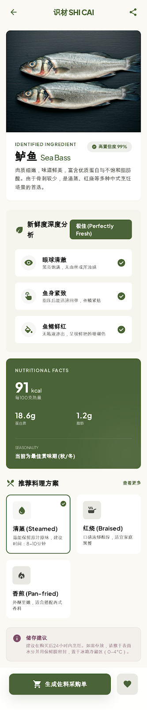
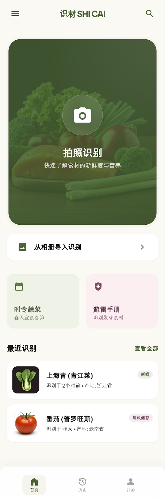
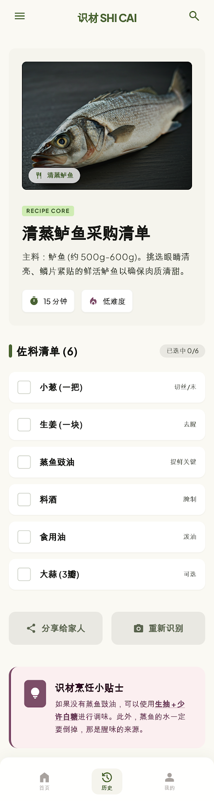

知食角 Mercadista
拍一下，认食材 · 看鲜度 · 找做法 · 自动补清单
For everyday markets · for curious eaters
拍一下，把陌生食材变成熟悉生活。
你不需要再站在货架前猜，不需要回家后再搜，不需要临做饭时才发现少买了关键配料。知食角把识别、鲜度、做法和清单，连成一个顺手完成的动作。
最容易让人心动的地方
不是“它有 AI”，而是“它刚好把我最容易卡住的那一秒，变得轻松了”。
现在就能做到
认出它，再顺手决定今晚怎么吃。
不是先认识再自己想下一步，而是识别结果、鲜度判断、做法灵感和购物清单被整理在同一个体验里。


你会实际感受到的变化
- 看到陌生食材时，不再只能靠猜。
- 知道为什么它看起来新鲜，买得更有底气。
- 结果页不只告诉你名字，还继续告诉你能做什么。
- 缺的配料一键进清单，出门采购更轻松。
What it feels like
像身边多了一个懂买菜的人。
不吵闹，但每一步都接得刚好。
Why people want this
它不是一个“识别完就走”的小工具，而是把买菜、做饭、探索新食材这几件事重新缝在一起。
真正让用户想继续打开的，不是功能列表，而是那种“它刚好懂我现在卡在哪”的感觉。知食角做的就是这件事：把陌生感变短，把下一步变近。
At the market, in the kitchen, on the way home
你看到的是热闹的市场，知食角给你的是更清楚的判断力。
不认识的蘑菇、分不清差别的番茄、拿不准够不够鲜的鱼虾，这些“要不要买”的瞬间，往往决定了这顿饭会不会开始。知食角把它们变成更轻松的决定。
国外超市第一次也敢买
周末市场逛得更开心
家里做饭的人更省心
看见
不再只是看到食材，而是快速理解它。
决定
不再拖着犹豫，而是知道是否值得买。
做成
从灵感走向行动，这顿饭更容易真的开做。
第一次做饭的人，也能少犯很多错。
看不懂食材时先拍一下，回到厨房时就不再是“瞎试”，而是有名字、有鲜度、有建议的开始。
更少犹豫
更少浪费
更容易下厨
知道做什么，也知道缺什么。
识别之后直接补足需要的配料，让逛超市更像按图完成，不用边走边想，也不用回家后再发现少买了一样。
自动补料
更顺手采购
少回头重买
每次认识新食材，都值得被留住。
扫过的食材、试过的做法、看过的鲜度，会慢慢变成自己的食材经验，而不是一次性使用过就消失。
图鉴感
分享欲
持续探索
Product moments
真正让人想点开的官网，不只是讲功能，而是让你一眼看见“这件事会更顺”。
所以这一段直接把真实产品放在前面。首页入口、结果页、购物清单不是辅助说明，而是这页官网最重要的主角。用户一看到，就知道它会怎样进入自己的生活。
从看到食材，到把今晚这顿饭安排明白。
知食角最舒服的地方，不是哪一页单独多炫，而是每一步都自然接上下一步。拍一下时轻、看结果时清楚、去采购时不乱，整个闭环像一口气完成。
01
首页像一个明确入口
相机入口足够直接，第一次打开也不会迷路，用户天然知道从哪里开始。
02
结果页给出可理解的判断
不是只贴一个结论，而是把鲜度依据、营养、推荐做法一起整理好。
03
清单页让行动更顺
缺什么、该买什么、哪些是关键佐料，一眼就知道，出门采购也更踏实。
先拍一下
首页入口大、情绪明确，第一次打开也不会迷路，天然就是用户愿意点的起点。
再看鲜度与做法
识别之后继续提供鲜度依据、营养信息和推荐做法，答案不是一句话，而是一整套理解。

最后直接去买
清单干净、重点明确，出门采购时不容易漏掉关键配料，也不需要回家之后再补买。
How it fits real life
它最好的体验，不在于哪一页多炫，而在于每个生活场景都被刚好接住。
你在市场里看到一个不确定的食材，在厨房里想不到怎么做，在超市里怕漏买东西。这些时刻本来是碎的，知食角把它们接成一条连续的路径。
从市场到餐桌，不再断线。
你认出来、你判断完、你选了做法、你把清单带走。每一步都延续上一步，而不是重新开始。对用户来说，这才是它真正让人上头的地方。
01
在菜市场看见陌生食材
先拍照识别，知道它是什么、适合怎么处理，第一次看到也不会手足无措。
02
不确定够不够新鲜
不仅告诉你结论，还把能看得懂的鲜度依据一起展示，让判断更有把握。
03
回家前就想好今晚做什么
系统顺手给出做法灵感，家常路线和更有探索感的路线都能接住。
04
去超市或继续补料时更轻松
需要补的配料直接进清单，采购变成按步骤完成，而不是边走边想。
What changes for users
从“我不确定”到“我现在就能决定”。
用户不需要切出去搜、不需要自己重新组织信息，结果已经把下一步准备好了。
For markets, supermarkets, new cities
适合喜欢吃，也愿意更会买的人。
无论你是在国外超市第一次见到不认识的蔬菜，还是在周末市场里被新鲜海鲜吸引得想下手，知食角都能让你从“我好像想买”走到“我知道该怎么处理它”。
留学生或刚搬去新城市的人
看到陌生食材不再只敢路过，可以更自然地开始探索当地饮食，也更容易把“看不懂”变成“想试试”。
- 第一次见到也敢买
- 陌生超市不再像开盲盒
- 探索当地饮食更自然
家里负责买菜和做饭的人
判断、决定和补料都更高效，少花很多重复思考的精力，也少掉很多“忘记买”的来回折返。
- 少犹豫，少漏买
- 从识别直接走到清单
- 厨房决策压力更小
喜欢记录和分享食材的人
每一次扫描都不是一次性使用，而是在慢慢积累自己的食材经验，让探索这件事变得更有收藏感和分享欲。
- 扫过的食材更容易记住
- 做法与清单更适合分享
- 越用越像自己的食材图鉴
Ready to try
下次看到不认识的食材，别再猜了。
让知食角帮你认出它、判断它、安排它。你会更快做决定，也会更快把“今天想吃什么”真正变成一顿饭。